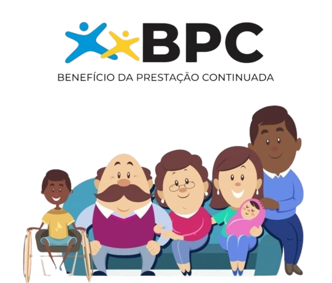

POR QUE CONTRIBUIR COM A ONG?
Contribuir com a ONG ESPAÇO AZUL proporciona o bem-estar e o desenvolvimento social de crianças e adolescentes com Transtorno do Espectro Autista (TEA). Ao apoiar essa causa, você não apenas oferece suporte direto às famílias e indivíduos afetados pelo TEA, mas também desempenha um papel fundamental na inclusão e na construção de uma sociedade mais igualitária e compassiva.
Redução no Imposto de Renda
Pessoas físicas que optam pelo modelo completo de declaração do imposto de renda podem deduzir as doações feitas a entidades beneficentes do imposto devido. O limite de dedução é de até 6% do imposto devido, calculado antes da dedução das doações.
- 1. Baixe e instale o programa da Receita Federal e entre na parte de Imposto de Renda no seu dispositivo.
- 2. Acesse a ficha doações diretamente na declaração no menu do lado esquerdo da tela e clique em "Novo"
- 3. Selecione o tipo de fundo, que pode ser “Nacional”, “Estadual” ou “Municipal”.
- 4. Em seguida, preencha o valor desejado para a doação e clique em “OK” para concluir o preenchimento da ficha.
- 5. Após isso, é necessário emitir os Documentos de Arrecadação Federal (DARFS) específicos.
- 6. Por fim, informe à instituição escolhida que você realizou uma doação no Imposto de Renda.
Benefício BPC
Além dos benefícios fiscais, as crianças diagnosticadas com TEA podem solicitar o BPC da Lei Orgânica da Assistência Social (LOAS). Este benefício é destinado a pessoas consideradas incapazes de se manterem sozinhas e cuja renda por pessoa da família seja inferior a um 1/4 do salário mínimo vigente.
Em 2024, com o salário mínimo em R$ 1.412, a renda por pessoa da família não pode ser superior a R$ 3.531. Além disso, é necessário um laudo médico e uma avaliação conjunta, que inclui uma avaliação social realizada pelo Serviço Social do INSS e uma avaliação médica realizada pela Perícia Médica Federal.
Doação com Nota Fiscal Paulista
A dedução das doações contribui para reduzir o valor do imposto de renda que o contribuinte deve pagar ao governo. Portanto, ao doar para uma organização como o Espaço Azul, o contribuinte pode reduzir sua carga tributária.
- 1. Cadastre o seu CPF e faça o login no programa Nota Fiscal Paulista
- 2. Selecione a opção Doação Automática com CPF.
- 3. Escolha para qual instituição será destinado o dinheiro e por quanto tempo deseja contribuir.
Carteira de Identificação
A lei Lei Romeo Mion permite a criação da Carteira de Identificação da Pessoa com TEA (Ciptea). A legislação vem como uma resposta à impossibilidade de identificar o autismo visualmente, o que com frequência gera obstáculos ao acesso a atendimentos prioritários e a serviços aos quais os autistas têm direito, como estacionar em uma vaga para pessoas com deficiência. O documento é emitido de forma gratuita por órgãos estaduais e municipais.
Transporte Gratuito
A Lei 8.899/94 garante a gratuidade no transporte interestadual à pessoa autista que comprove renda de até dois salários mínimos. A solicitação é feita através do Centro de Referência de Assistência Social (CRAS).
Diagnóstico Precoce
A Lei Berenice Piana (12.764/12) determina o direito dos autistas a um diagnóstico precoce, tratamento, terapias e medicamento pelo Sistema Único de Saúde; o acesso à educação e à proteção social; ao trabalho e a serviços que propiciem a igualdade de oportunidades. Esta lei também estipula que a pessoa com transtorno do espectro autista é considerada pessoa com deficiência, para todos os efeitos legais.